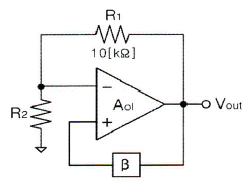
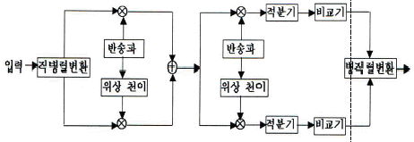
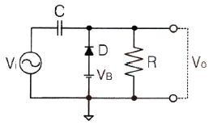
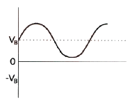
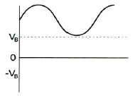
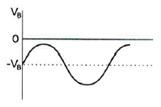
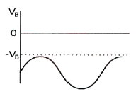
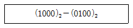
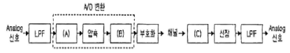
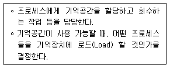

무선설비산업기사 (2016-10-01 기출문제)
1과목: 디지털 전자회로
1. P형과 N형 사이에 샌드위치 형태의 특별한 반도체층인 진성층을 갖고 있으며, 이 층이 다이오드의 커패시턴스를 감소시켜 일반적인 다이오드보다 고주파에서 동작하며, RF 스위칭용으로 사용되는 다이오드는?
- 핀(PIN) 다이오드
- 건(Gunn) 다이오드
- 임팻(IMPATT) 다이오드
- 터널(Tunnel) 다이오드
(정답률: 90%)

2. 다음 중 정전압 안정화회로의 구성요소 중 하나인 제어부 역할에 대한 설명으로 옳은 것은?
- 제너다이오드 또는 건전지로 기준전압을 얻는다.
- 출력을 제어하고 변동분을 상쇄하여 출력전압을 항상 일정하게 한다.
- 기준전압과 검출된 출력전압의 차를 제어신호로 얻는다.
- 검출된 신호를 증폭하여 변동을 상쇄할 수 있는 극성의 신호를 제어소자에 가한다.
(정답률: 80%)
3. 이미터접지 트랜지스터 증폭기회로에서 입력신호와 출력신호의 전압 위상차는 얼마인가?
- 90°의 위상차가 있다.
- 180°의 위상차가 있다.
- 270°의 위상차가 있다.
- 360°의 위상차가 있다.
(정답률: 88%)
4. 이미터 전류를 1[mA] 변화시켰더니 컬렉터 전류의 변화는 0.96[mA]였다. 이 트랜지스터의 β는 얼마인가?
- 0.96
- 1.04
- 24
- 48
(정답률: 69%)
5. 다음 중 적분기에 사용되는 콘덴서의 절연저항이 커야하는 이유로 옳은 것은?
- 연산의 정밀도를 높이기 위하여
- 연산이 끝나면 전하를 방전시키기 위하여
- 단락시켜도 잔류전압이 방전 안되기 때문에
- 회로 동작이 복잡해지기 때문에
(정답률: 79%)
6. 다음 중 이상적인 연산증폭기(OP-AMP)가 갖추어야 할 조건으로 틀린 것은?
- 입력 임피던스가 무한대
- 대역폭이 무한대
- 전압이득이 무한대
- 입력 오프셋(Offset) 전압이 무한대
(정답률: 75%)
7. 다음 그림은 윈 브리지 발진기의 블록도이다. 발진하기 위한 저항 R2의 값은?

- 5[kΩ]
- 10[kΩ]
- 20[kΩ]
- 30[kΩ]
(정답률: 78%)
8. 다음 중 클랩(Clapp) 발진기의 특징이 아닌 것은?
- 콜피츠 발진기를 변형한 것이다.
- 발진주파수가 안정하다.
- 발진주파수 범위가 작다.
- 발진출력이 크다.
(정답률: 73%)
9. 다음 중 아날로그 진폭 변조 방식의 종류가 아닌 것은?
- DSB-LC(DSB-TC)
- DSB-SC
- FM
- SSB
(정답률: 76%)
10. 다음 펄스 변조 방식 중 연속레벨 변조방식과 관련이 없는 것은?
- PAM
- PWM
- PCM
- PPM
(정답률: 78%)
11. 다음의 회로 구성도로 동작하는 변복조 방식은?

- 2-PSK
- QPSK
- 8-PSK
- OQPSK
(정답률: 81%)
12. 다음 중 위상 고정 루프(PLL : Phase Locked Loop)를 구성하는 내부 회로가 아닌 것은?
- 전압 제어 발진기
- 발진 제어 전압 발생기
- 위상 비교기
- 저역 통과 필터
(정답률: 63%)
13. 다음 회로에 정현파가 입력될 때 출력 파형으로 맞는 것은? (단, VB는 정현파의 진폭보다 크며, 다이오드는 이상적인 다이오드라고 가정한다.)





(정답률: 78%)
14. 다음 2진수의 뺄셈 결과로 맞는 것은?

- (0011)2
- (0100)2
- (0101)2
- (0110)2
(정답률: 83%)
15. 4진수 231.3을 7진수로 변환하면?
- 45.5151
- 45.5252
- 63.5151
- 63.5252
(정답률: 64%)
16. 다음 중 부울 대수의 법칙이 아닌 것은?
- 항등법칙
- 동일법칙
- 복원법칙
- 감산법칙
(정답률: 65%)
17. 논리식 A(A+B+C)를 간략화한 것으로 옳은 것은?
- 1
- 0
- A+B+C
- A
(정답률: 81%)
18. 8비트의 링카운터를 설계할 때 최소로 필요한 플립플롭의 수는?
- 4
- 8
- 16
- 32
(정답률: 65%)
19. 다음 중 레지스터의 주 기능에 해당하는 것은?
- 스위칭 기능
- 데이터의 일시 저장
- 펄스 발생기
- 회로 동기장치
(정답률: 92%)
20. 다음 중 DRAM의 구조에서 존재하지 않는 동작은 무엇인가?
- 쓰기 모드
- 읽기 모드
- 래치(Latch)
- 재충전
(정답률: 78%)
2과목: 무선통신 기기
21. 무선통신에서 발생하는 스퓨리어스의 발생 원인으로 적합하지 않은 것은?
- 상호 변조
- 주파수 체배
- 푸시풀 증폭
- 증폭기의 비직선성
(정답률: 56%)
22. 다음 중 AM(Amplitude Modulation) 변조방식에 대한 설명으로 틀린 것은?
- 정보신호에 따라 반송파 신호의 진폭이 변하는 변조기술을 이용한다.
- AM 반송파 주파수는 FM 반송파 주파수보다 낮은 주파수를 사용한다.
- AM 송신기 주파수 대역폭은 FM 송신기 주파수 대역폭보다 좁다.
- AM 방송국 송신 안테나는 일반적으로 산 정상에 설치하여 신호 송출한다.
(정답률: 67%)
23. 디지털 변복조기에서 바로 전의 신호 위상을 기준으로, 1을 나타내는 비트에서는 그 위상을 180°만큼 바꾸고, 0을 나타내는 비트에서는 그 위상을 그대로 유지하는 변조기술은 무엇인가?
- DPSK(Differential Phase Shift Keying)
- ASK(Amplitude Shift Keying)
- FSK(Frequency Shift Keying)
- QAM(Quadrature Amplitude Modulation)
(정답률: 70%)
24. 통신 속도가 1,200[bps]일 때 4상식 위상변조를 하면 데이터 신호속도는 몇 [bps]인가?
- 600[bps]
- 1,200[bps]
- 2,400[bps]
- 4,800[bps]
(정답률: 79%)
25. 공항에서 필요한 전파를 발사하고 조종사는 이것을 받아서 계기의 지시에 따라 항공기를 안전하고 무사하게 착륙시키는 장치는?
- ILS(Instrument Landing System)
- DME(Distance Measuring Equipment)
- TACAN(Tactical Air Navigation)
- VOR(VHF Omnidirectional Radio Range)
(정답률: 84%)
26. 다음 중 마이크로파(Microwave)의 특징으로 틀린 것은?
- 마이크로파는 주파수가 단파, 초단파보다 높다.
- 마이크로파는 전파 손실이 적다.
- 마이크로파는 전파의 전달 방식에 따라 회절방식과 대류권 방식으로 분류한다.
- 마이크로파는 예리한 지향특성을 얻는다.
(정답률: 61%)
27. 마이크로파(Microwave) 동기 방식 중 비트 동기는 각 펄스 사이의 주기를 결정하는 요소인데 이는 수신측에서 무엇을 만들기 위해 필요한 것인가?
- 검사 비트(Check Bit)
- 클록 펄스(Clock Pulse)
- 멀티플렉서(Multiplexer)
- 평형변조(Balanced Modulation)
(정답률: 81%)
28. 다음 중 위성통신용 파라메트릭(Parametric) 증폭기에 관한 설명으로 틀린 것은?
- 비선형 가변 리액턴스 소자로 바렉터 다이오드가 실용적으로 사용된다.
- 증폭기의 잡음온도를 감소시키기 위하여 Q가 작은 다이오드를 선택한다.
- 저잡음 증폭기로서 일종의 부성저항 증폭기이다.
- 액체 He에 의한 초저온(-260℃) 상태에서 특성을 낸다.
(정답률: 70%)
29. 다음 중 위성의 다원접속기술에서 회선할당방식에 속하지 않는 것은?
- 고정할당방식
- 요구할당방식
- 개방할당방식
- 랜덤할당방식
(정답률: 72%)
30. 기지국, 유선인터넷망, Gateway 및 O&M Server로 구성되며 Core 네트워크와의 연계를 통해 LTE 전화 및 무선데이터 통신을 제공하는 서비스기술은?
- 펨토셀
- WiFi
- WiMax
- GPS
(정답률: 87%)
31. 다음 중 고속영상전송이 가능한 이동통신 기술은?
- CDMA 1X 기술
- GSM 기술
- LTE-A 기술
- AMPS 기술
(정답률: 89%)
32. 다음 중 축전지 충전의 종류가 아닌 것은?
- 단순 충전
- 평상 충전
- 균등 충전
- 부동 충전
(정답률: 83%)
33. 다음 중 CDMA 중계기의 상태를 감시하기 위해 중계기에서 공급되는 전원을 사용하여 감시단말기를 중계기에 연결할 경우 필요한 장치는? [단, 중계기의 공급전원 DC(직류)는 12[V]이고 단말기가 필요로 하는 전원은 DC(직류) 3.5[V]이다.]
- 컨버터(Converter)
- 인버터(Inverter)
- 정류기(Rectifier)
- 계전기(Relay)
(정답률: 77%)
34. 다음 중 태양광 설치 후 전기료에 대한 설명으로 옳은 것은?
- 태양광 설치 후 전기료 절감은 지역별 차이가 없다.
- 설치장소의 일사량, 지형, 기후 조건에 따라 차이가 있다.
- 설치장소의 인구수에 따라 차이가 있다.
- 설치 회사의 설치 인력 수에 따라 차이가 있다.
(정답률: 86%)
35. 다음 중 FM 송신기의 전력 측정 방법으로 적합하지 않은 것은?
- 열량계에 의한 방법
- C-M형 전력계에 의한 방법
- 수부하에 의한 방법
- 볼로미터 브리지에 의한 방법
(정답률: 78%)
36. 다음 중 무선수신기에 고주파증폭기를 사용하는 목적으로 적합하지 않은 것은?
- S/N비를 향상시킨다.
- 감도를 높인다.
- 페이딩 효과를 경감시킨다.
- 수신안테나와 수신기와의 결합을 용이하게 한다.
(정답률: 71%)
37. 다음 그림은 Analog 입력신호에 대한 펄스부호변조(PCM) 과정을 나타낸 것이다. (A), (B), (C)에 들어갈 과정으로 올바르게 짝지어진 것은?

- (A)=양자화, (B)=복호화, (C)=표본화
- (A)=양자화, (B)=표본화, (C)=복호화
- (A)=표본화, (B)=양자화, (C)=복호화
- (A)=표본화, (B)=복호화, (C)=양자화
(정답률: 85%)
38. 송신안테나로부터 일정거리 떨어진 A지점에서 측정한 전계강도가 20[dB]일 때 A지점 보다 2배 떨어진 B지점에서의 전계강도는 몇 [μV/m] 인가?
- 1[μV/m]
- 2[μV/m]
- 5[μV/m]
- 10[μV/m]
(정답률: 71%)
39. 다음 중 전송선로의 정합상태를 나타내는 것은?
- 정재파비
- 가변 임피던스
- 스미스 도표
- 특성 임피던스
(정답률: 83%)
40. 전원장치의 출력 직류전압이 50[V], 출력 교류 실효전압이 1[V]인 경우 이 전원장치의 맥동률은 몇 [%] 인가?
- 0.5
- 1
- 2
- 5
(정답률: 64%)
3과목: 안테나 개론
41. 동축케이블에서 비유전율이 2.3인 폴리스텔렌을 매질로 사용하는 경우에 특성 임피던스는 약 얼마인가? (단, 동축케이블의 손실이 최소가 되는 조건으로 D/d=3.6이 되는 조건)
- 35[Ω]
- 50[Ω]
- 75[Ω]
- 100[Ω]
(정답률: 65%)
42. 다음 중 전파의 성질에 대한 설명으로 옳은 것은?
- 전파는 종파이다.
- 주파수는 파장의 크기에 비례한다.
- 전파의 속도는 유전율이 클수록 빨라진다.
- 편파성을 갖는다.
(정답률: 69%)
43. 다음 중 균일 평면 전자파에 대한 설명으로 틀린 것은?
- 전계와 자계가 모두 전파방향과 수직인 평면 내에 있다.
- 에너지 밀도가 변하지 않고 파동의 각 부분이 같은 방향으로 직진하는 이상적인 파동으로서 송신안테나로부터 원거리의 영역에서 존재한다.
- 종파이며 ‘TE'파로 불린다.
- 균일한 평면파는 2차원 면에 무한히 퍼져있기 위한 무한량의 에너지를 필요로 한다.
(정답률: 83%)
44. 다음 중 급전선로의 정재파비를 낮게 하는 이유로 가장 적합한 것은?
- 스퓨리어스 방출을 감소시키기 위해
- 저온에서 급전선로를 가열하기 위해
- 인접 무선기기와의 혼신을 줄이기 위해
- 보다 효율적인 전자파 에너지의 전달을 위해
(정답률: 74%)
45. 특성임피던스가 200[Ω]인 동축케이블의 무손실 선로에서 50[Ω]의 부하를 접속할 때 이 선로의 정재파비는?
- 4
- 3.2
- 1.2
- 0.6
(정답률: 71%)
46. 다음 중 안테나를 설계할 때 임피던스 정합 회로를 사용하는 이유로 적합하지 않은 것은?
- 왜율이나 이중상(Ghost) 발생을 방지하기 위하여
- 최대 전력을 전송하기 위하여
- 전송선로와 안테나 정합부에서 반사를 최소화하기 위하여
- 전송선로의 정재파비를 최대화하기 위하여
(정답률: 76%)
47. 급전선의 반사계수(Γ)가 0.5일 경우 최대 전압이 66[V]라면, 최소 전압은 얼마인가?
- 132[V]
- 33[V]
- 22[V]
- 11[V]
(정답률: 75%)
48. 다음 중 마이크로파대 주파수의 전송선로로 도파관을 사용하는 이유가 아닌 것은?
- 취급할 수 있는 전력이 크다.
- 외부 전자계와 완전히 결합된다.
- 방사손실이 적다.
- 유전체 손실이 적다.
(정답률: 82%)
49. 다음 중 반파장 다이폴 안테나에 대한 설명으로 틀린 것은?
- 안테나의 길이는 λ/2이다.
- 전류의 크기는 양쪽 끝에서 최소가 된다.
- 전압의 크기는 양쪽 끝에서 최대가 된다.
- 반사형 안테나이다.
(정답률: 75%)
50. 다음 중 안테나의 반치각에 대한 설명으로 옳은 것은?
- 복사전계강도가 1/2로 되는 두 방향 사이의 각을 말한다.
- 복사전력이 1/2이 되는 두 방향 사이의 각을 말한다.
- 실제에 있어서 미소다이폴의 경우 70°, 반파장 다이폴의 경우 90° 정도이다.
- 최대 복사방향을 중심으로 총 복사전력의 90[%]를 포함하는 범위의 사이각을 말한다.
(정답률: 59%)
51. 다음 중 접지안테나의 방사효율을 높이기 위한 방법으로 적합하지 않은 것은?
- 안테나의 실효고를 증가시킨다.
- 안테나의 공급전류를 증가시킨다.
- 접지저항을 작게 한다.
- 방사저항을 작게 한다 .
(정답률: 59%)
52. 다음 중 가시거리(Line Of Sight)인 임의의 송수신 지점간 자유공간 전력손실을 계산할 때 고려사항이 아닌 것은?
- 송신 전력
- 장애물 손실
- 수신 안테나 이득
- 수신 전력
(정답률: 68%)
53. 다음 중 통신위성에 장착하는 안테나로 적합하지 않은 것은?
- 헤리컬 안테나
- 파라볼라 안테나
- 대수주기 안테나
- 무지향성 안테나
(정답률: 60%)
54. 다음 중 심굴접지에 대한 설명으로 틀린 것은?
- 소규모의 안테나 접지에 사용된다.
- 깊이 매설된다.
- 접지저항은 10[Ω] 정도이다.
- 도전율이 작은 지역에 적용된다.
(정답률: 55%)
55. 다음 중 지표파의 특성에 대한 설명으로 틀린 것은?
- 주파수가 높을수록 전파의 감쇠는 크다.
- 안테나의 지상고가 높을수록 지표파 성분이 적다.
- 수평편파가 수직편파보다 감쇠가 많다.
- 대지의 도전율과 유전율에 영향을 받지 않는다.
(정답률: 82%)
56. 프레즈넬 존(Fresnel zone)이 발생하는 이유는?
- 대지반사파와 지표파의 간섭
- 대류권파와 전리층파의 간섭
- 반사파와 직접파의 간섭
- 직접파와 회절파의 간섭
(정답률: 68%)
57. 전계강도의 변동폭이 커서 특히 마이크로파 대역에서 실용상 문제가 되는 페이딩은?
- K형
- 신틸레이션형
- 선택형
- 덕트(Duct)형
(정답률: 81%)
58. 다음 중 단파 무선통신에서 페이딩(Fading) 방지 또는 경감방법과 관계없는 것은?
- 공간 다이버시티 수신법
- AGC회로 부가
- 톱로딩(Top Loading) 안테나
- 주파수 다이버시티 수신법
(정답률: 78%)
59. 중파방송에서 주로 사용되는 전파방식은?
- 공간파
- 지표파
- 회절파
- 직접파
(정답률: 72%)
60. 다음 중 우주통신에서 사용되는 전파의 창범위를 결정하는 요소로 적합하지 않은 것은?
- 우주잡음의 영향
- 전리층의 영향
- 정보 전송량의 문제
- 도플러 효과의 영향
(정답률: 70%)
4과목: 전자계산기 일반 및 무선설비기준
61. 다음 중 컴퓨터의 기본 구조에 대한 설명으로 틀린 것은?
- CPU는 컴퓨터의 특성과 성능을 결정한다.
- 주기억장치는 레지스터보다 액세스 속도가 빠르다.
- 입, 출력 장치는 별도의 인터페이스 회로가 필요하다.
- 보조 저장 장치는 영구 저장 능력을 가지고 있다.
(정답률: 66%)
62. 산술 및 논리 연산의 결과를 일시적으로 기억하는 레지스터는?
- Instruction 레지스터
- Status Flag 레지스터
- Accumulator 레지스터
- Address 레지스터
(정답률: 79%)
63. 8비트로 표현되는 부호와 절대치(Signed Magnitude)의 방식에서 -50을 한 비트 우측으로 산술적 시프트 시키면 어떻게 표시되는가?
- 01011001
- 10110010
- 10011001
- 1 1000 0100 1011
(정답률: 52%)
64. 컴퓨터에서 음수를 표현하는 방법이 아닌 것은?
- Signed Magnitude 표현법
- Signed Code 표현법
- Signed-1's Complement 표현법
- Signed-2's Complement 표현법
(정답률: 76%)
65. 다음 보기는 운영체제의 어떤 자원 관리 기능에 대한 설명인가?

- 디스크 관리 기능
- 입출력 장치 관리 기능
- 프로세스 관리 기능
- 기억장치 관리 기능
(정답률: 73%)
66. 다음 중 운영체제가 관리하는 리소스의 종류가 아닌 것은?
- 주기억장치
- 그래픽 카드
- 프로세서 스케줄
- BIOS
(정답률: 77%)
67. 김씨는 인터넷에서 소프트웨어를 다운 받아 사용하는데, 30일이 되는 날 ‘프로그램을 실행시키려면 금액을 지불하고 사용하라’는 메시지를 받았다. 김씨가 사용한 소프트웨어는 무엇인가?
- 데모 프로그램
- 상용 프로그램
- 프리웨어 프로그램
- 셰어웨어 프로그램
(정답률: 79%)
68. 다음 중 고급언어로 쓰여진 프로그램을 컴퓨터에서 수행될 수 있는 저급의 기계어로 번역하는 것은?
- C 언어
- 포트란
- 컴파일러
- 링커
(정답률: 85%)
69. 다음 중 프로그램카운터의 기능에 대한 설명으로 옳은 것은?
- 다음에 수행할 명령의 주소를 기억하고 있다.
- 데이터가 기억된 위치를 지시한다.
- 기억하거나 읽은 데이터를 보관한다.
- 수행 중인 명령을 기억한다.
(정답률: 79%)
70. CPU가 실행하여야 할 명령어의 수가 75개인 경우 명령어 구분을 위한 명령코드(Op-Code)는 최소한 몇 비트가 필요한가?
- 5비트
- 6비트
- 7비트
- 8비트
(정답률: 80%)
71. 다음 중 전파법에서 규정하는 용어의 정의로 틀린 것은?
- ‘전파’란 인공적인 유도(誘導) 없이 공간에 퍼져 나가는 전자파로서 국제전기통신연합이 정한 범위의 주파수를 가진 것을 말한다.
- ‘주파수분배’란 특정한 주파수를 사용할 수 있는 권리를 특정인에게 부여하는 것을 말한다.
- ‘무선종사자’란 무선설비를 조작하거나 설치공사를 하는 자로서 기술자격증을 발급받은 자를 말한다.
- ‘주파수지정’이란 허가나 신고로 개설하는 무선국에서 이용할 특정한 주파수를 지정하는 것을 말한다.
(정답률: 77%)
72. 주파수 2.4[kHz]를 필요주파수대폭의 표시방법으로 바르게 표시한 것은?
- K240
- 2K40
- 240K
- 20K4
(정답률: 83%)
73. 다음 중 선박국용 초단파대 무선전화 장치의 적합성평가를 위한 전기적 시험항목으로 틀린 것은?
- 시동 후 2분 후에 정상 동작함을 확인
- 주파수 허용 편차
- 점유주파수대폭의 허용치
- 스퓨리어스발사의 허용치
(정답률: 82%)
74. 다음 중 방송통신기자재 등의 적합인증 신청 시 구비서류가 아닌 것은?
- 사용자 설명서
- 외관도
- 회로도
- 주요 부품명세서
(정답률: 84%)
75. 해당 방송통신기자재 등이 적합성평가기준에 적합하지 않게 된 경우 1차 위반시의 행정처분은 무엇인가?
- 파기명령
- 수입중지
- 시정명령
- 생산중지
(정답률: 86%)
76. 다음 중 무선설비기준에서 수신설비가 갖추어야 할 충족조건이 아닌 것은?
- 감도는 낮은 신호입력에도 양호할 것
- 내부잡음이 클 것
- 수신주파수는 운용범위 이내일 것
- 선택도가 클 것
(정답률: 82%)
77. 방송국 송신설비의 안테나공급전력 허용편차는?
- 상한 5[%], 하한 10[%]
- 상한 5[%], 하한 20[%]
- 상한 10[%], 하한 5[%]
- 상한 10[%], 하한 15[%]
(정답률: 62%)
78. 108[MHz] 내지 118[MHz]의 주파수의 전파를 전 방향에 발사하는 회전식 무선표지업무를 행하는 무선설비는?
- 글라이드 패스(Glide Path)
- 마아커 비콘(Marker Radio Beacon)
- 전방향표지시설(VHF Omni-directional Range)
- Z 마아카(Zone Marker)
(정답률: 78%)
79. 다음 통신공사의 감리업무에서 무선설비 주요 기자재를 검수하는 방법 중 조회에 의한 검수 내용으로 옳은 것은?
- 검수방법은 감리사가 입회하여 재료 제작자의 실험설비나 공장 시험장에서 시험을 실시하고 그 결과로 얻은 성적표로 검수한다.
- 감리사가 공공시험기관에 시험을 의뢰 요청하여 실시하고 그 시험 성적 결과에 의하여 검수한다.
- 대상 기자재의 범위는 공사상 중요한 기자재 또는 특별 주문품, 신제품 등으로써 품질 성능을 판정할 필요가 있는 기자재로 한다.
- 규격을 증명하는 KS 등의 마크가 표시되어 있는 규격품이나 적절하다고 인정할 수 있는 품질증명이 첨부되어 있는 제품을 대상으로 한다.
(정답률: 85%)
80. 무선설비의 시설물별 표준시방서를 기본으로 모든 공종을 대상으로 하여 특정한 공사의 시공 또는 공사시방서의 작성에 활용하기 위한 종합적인 시공기준을 무엇이라고 하는가?
- 일반시방서
- 전문시방서
- 감리시방서
- 표준시방서
(정답률: 72%)